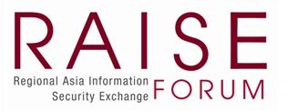

Regional Asia Information Security Exchange (RAISE) Forum (@raiseforum.org)
The RAISE Forum was established since 2004 as an overall focal point for the Asian standardization community on information security issues by:
- providing a platform for sharing of knowledge, and exchange ideas and dialogues on information security strategy, policies, and practices, including but not limited to their development, implementation, changes, and any lessons learnt that could be beneficial to the members of the Forum;
- providing a platform for sharing of knowledge, exchange of ideas and dialogues on information security standards related issues, challenges, and directions, in particular, relating to the adoption, deployment, and implementation of ICT related standards in the region;
- ensuring that the security-related standardization activities in Asia adequately reflect the requirements of the market constituents at a strategic level;
- providing a mechanism that could be used to follow-up on Asia policy requirements on Information Security standards issues;
- providing effective co-ordination between organizations of relevant standardization work programs and their execution;
- ensuring Asia requirements for standards and standards work in this area are correctly interfaced with international standards activity, and standards activity in other regions, to avoid conflict or duplication of effort; and
- acting as a strategic communication interface between relevant standards authorities and agencies on international standardization related topics.
Meeting Schedule & Location
The RAISE Forum has held its 24th meeting since its inception. The Forum now meets once a year, in a location agreed by members from previous meeting. Each meeting is organized by the member from the location who is hosting the event. Attendees, both speakers and participants are self-funded for the event.
Due to the global COVID-19 pandemic situation, the 20th, 21st, and 22nd RAISE Forum meetings were all held online in 2020, 2021, and 2022, respectively. The 23rd meeting was held in Beijing, hosted by Beijing Powertime. The 24th meeting was hosted by the Thailand National Cybersecurity Committee from 3rd to 4th December 2024 in Bangkok, Thailand. Participants and presenters at the 24th meeting were members from China, Japan, Korea, Malaysia, Singapore, Thailand, and ISC2.
The 25th RAISE Forum meeting was held on 22-23 September 2025 in Seoul, hosted by the Korea Telecommunication Technology Association (TTA), with sponsorship from Huawei International, and Beijing Powertime.